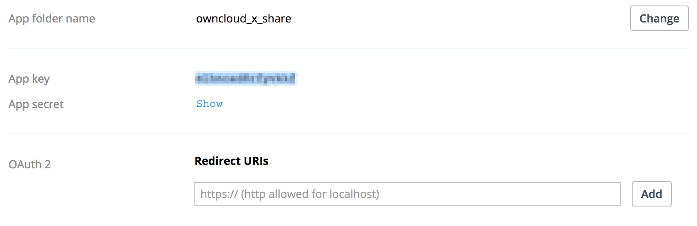

Dropbox¶
To connect Dropbox to your ownCloud installation requires four steps to be completed.
- Install the “External Storage: Dropbox” app from the ownCloud Marketplace
- Create a Dropbox app
- Create a Dropbox storage share
- Use the Dropbox share
Step One - Install the “External Storage: Dropbox” app from the ownCloud Marketplace¶

- Click Market in the ownCloud web UI dropdown menu on the left side
- Go to the Storage category
- select External Storage: Dropbox App
- Click INSTALL
Step Two - Create a Dropbox app¶
Next, you need to create a Dropbox app. To do that, open the new app creation form, where you see three questions:
- Choose an API –> “Dropbox API”
- Choose the type of access –> “App folder”
- Name your app
With all of the required details filled out, click the blue “Create app” button, in the bottom, right-hand corner. After you do that, the settings page for the application loads.
Important
Redirect URI: Here you must enter the exact URL of the page where you configure the storage.
Examples:
When configuring as an admin:
``http(s)://<<Server_Address>>/index.php/settings/admin?sectionid=storage``
When configuring as a user:
``http(s)://<<Server_Address>>/index.php/settings/personal?sectionid=storage``
Step Three - Create a Dropbox Share¶
To create a Dropbox share, under “admin -> Settings -> Admin -> Storage”, check the “Enable external storage” checkbox, if it’s not already checked. Then, in the dropdown list under “External storage”, click the first “Dropbox” option.
Note
There are two Dropbox options in the dropdown list, as Dropbox functionality is currently part of ownCloud’s core. However, the internal Dropbox functionality should be removed in ownCloud 10.0.4.
Then, you need to provide a name for the folder in the “Folder name” field, and a “client key” and “client secret”, located in the “Configuration” column. The client key and client secret values are the “App key” and “App secret” fields which you saw earlier in your Dropbox app’s configuration settings page.
After you have added these three settings, click “Grant access”. ownCloud then interacts with Dropbox’s API to set up the new shared folder. If the process is successful, a green circle icon appears, at the far left-hand side of the row, next to the folder’s name.

Other Options¶
If you want to restrict access to the share to a select list of users and groups, you can add them to the field in the “Available for” column.
Step Four - Using the Dropbox Share¶
After a Dropbox-backed share is created, a new folder is available under “All Files”. It has the name that you gave it when you created the share, and it is represented by an external share folder icon, as in the image below.
This links to a new folder in your Dropbox account, under “Dropbox > Apps”, with the name of the Dropbox app that you created.

Now, if you add files and folders in either the new Dropbox folder or the new ownCloud folder, after being synced, they will be visible inside the other.